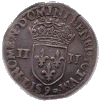

1574-1589Règne
Dernier ValoisDynastie
DouzainEspèce
LigueOpposition
Henri III (1574-1589) est le dernier roi de la branche Valois. Son règne s'achève dans la tourmente de la Ligue et des guerres de Religion. Malgré l'instabilité, le monnayage royal se poursuit : douzains, quarts d'écu et autres espèces continuent d'être frappés.
Après son assassinat en 1589, la couronne passe à Henri de Navarre, qui devient Henri IV, premier roi Bourbon.
Sources : catalogues Ciani, Duplessy · infonumis.info
Les monnaies du règne d’Henri III
Monnaie d’argent
'" loading="lazy" decoding="async" />
'" loading="lazy" decoding="async" />

AversQuart d'écu, croix de face
Date : 1587 ; Atelier : 9 (Rennes) ; 1.604.862 exemplaires
Point secret : néant
Argent ; 31 mm ; 9.60g (théorique 9.712g)
Avers : + HENRICVS. III. D: G. FRANC. ET POL. REX 1587 (Henri III, par la grâce de Dieu, roi des Francs et des Polonais) ; Croix fleurdelisée.
Revers : SIT. NOMEN. DOMINI. BENEDICTVM. (Mm) - 9 (légende commençant à 6 heures) (Béni soit le nom du Seigneur) ; Ecu de France couronné, accosté de II - II
Références : C.1483 Dy.1133 L.973 Sb.4662


Douzain aux deux H, 1er type
Date : 1577 ; Atelier : D (Lyon) ; 650.862 exemplaires
Axe des coins : 1h ; Point secret : 12e à l'avers (sous le D de DG)
Billon ; 24 mm ; 2.19g (théorique 2.399g)
Avers : +SIT. NOMEN. DNI. BENEDICT. (Mm). 1577. (trèfle) (Béni soit le nom du Seigneur) ; Croix échancrée cantonnée de quatre couronnes.
Revers : .HENRICVS. III. D: G: FRAN. ET. POL. REX. (Henri III, par la grâce de Dieu, roi des Francs et des Polonais) (légende commençant à 6 heures) ; Ecu de France accosté de deux H.
Références : C.1450 L.980 Dy.1140 Sb.4398
Les douzains du 1er type ont une croix cantonnée de quatre couronnes.
La frappe des douzains au nom du roi Henri III commença fin juillet 1575 pour être abandonnée en 1577 au profit des sols et double sols parisis, puis reprit en 1586.